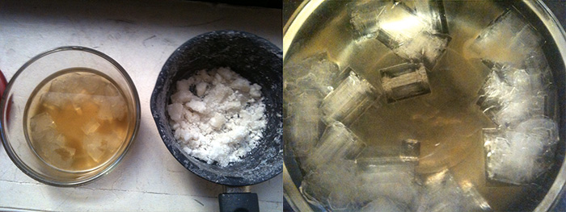
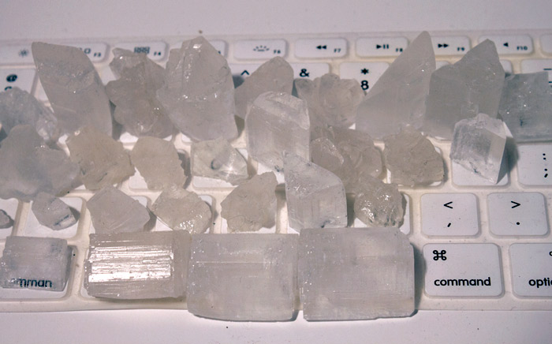

Crystal Keyboard, CCPM
We spend increasingly more time on the computer across the globe, using the keyboard as one of the main modes of interaction between ourselves and the rest of the world. CCPM proposes an alternative way of looking at the way we use the devices we rely on the most. What if the the energy we expend and “waste” can be harvested and stored into a battery for later use? Could these typing-powered batteries then be treated as designed objects with their own narratives and sentimental purposes?
Human Energy Harvesting
Energy harvesting is a term used to describe the process by which electric power could be extracted from ambient sources. This technique has its drawbacks in that its sources are usually only capable of generating low and unpredictable amounts of power. I focused primarily on harvesting energy generated by human motion. Other methods include harvesting from natural light, radio-frequency radiation and thermal gradients.
Currently, applications already exist which use motion and vibration to generate enough power for devices with varying power needs. The most successful of these involves the use of rotary motor mechanisms, whether they be taking advantage of pedal power on a bicycle, or attached to a pair of sneakers. So far, harvesting a useful amount of energy from these motions have required the mounting of uncomfortable and clunky mechanisms onto pre-existing consumer items such as shoes. On the other end of the spectrum, piezoelectric materials can be used to generate just enough energy to run low-power and ultra low-power devices such as hearing aids, lasers and micro controllers. Harvesting from ambient vibration requires working with the piezoelectricity of different natural materials. An initial goal was to try and explore systems which allowed their users to generate small amounts of power naturally and slowly. I did not want them to change how they interacted with the device.

Piezoelectricity and Rochelle Salt
The piezoelectricity was first noticed by the Curie brothers in the 1880s. It was discovered that certain materials such as crystals, bone, and silk produce electric charge when squeezed or struck. Since then the technology has used in applications ranging from the facilitation of pressure sensing applications to microphones. I chose to test the piezoelectric effect with potassium sodium tartrate, also known as Rochelle salt. Instead of working with lab-tested and commercially produced piezo ceramics and film tabs, I decided to try and grow my own Rochelle salt crystals for the first time. Rochelle salt has material limitations which makes it hard to incorporate into electronics because of the following reasons.
it generates a low AC current which would need to be converted to DC current before it could be used, the crystal as salt which has a liquid state if its environment is hot and humid enough, and the crystal itself with has certain polarities in its orientation.
The first issue became the main focus of my project. From my research, solving it requires a highly intricate and calculated circuit which will rectify the AC current and turn it into DC current, store the energy, set a threshold for when the energy can be released, and finally, release it when the previous demands have been met.

Interfacing the Keyboard
The keyboard is the most accessible way we communicate with computers. The mastery of this interface is stressed at a young age from elementary school onwards, and is even a qualification for securing a career. The speed and accuracy in which it can be operated has become the symbol of efficiency. Interfacing the keyboard with piezoelectric materials presents a consistent and dependable way of getting the intended results. Skilled typists average at about 120 words per minute while the average office- worker may be fine with 60-70. Fast typing on a QWERTY keyboard may generate up to 19 milliwatts per second. Multiply that by the number of hours the average office worker spends in front of the computer, and there may be just enough power to be harvested, stored, and used to power everyday devices. For a certain sedentary demographic, there is no other surface that the body comes into repeated contact with more than our keyboards- if we are to shorten our lifespans by sitting and typing too much, why not create some alternative batteries at the same time?